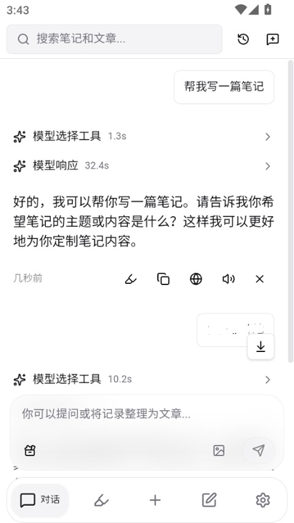
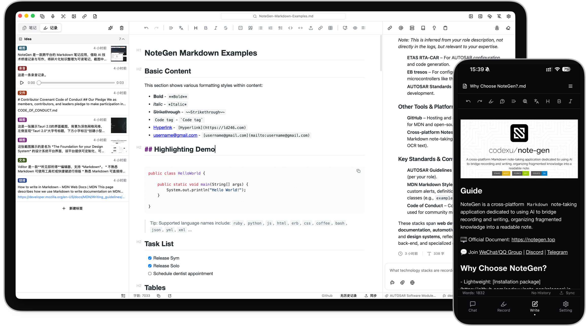

出差三天回来，我差点把半年的笔记全弄丢了
双设备同步冲突、Token 过期、断网离线改了一堆，回家连上 Wi-Fi 的那一刻我以为要重来。直到我想起了朋友推荐的那个笔记工具。
周五晚上十点的崩溃时刻
高铁上刷着手机还挺好的。我带了两台设备出门——主力笔记本留在家里，手机装了个笔记 App 应急，三天里断断续续写了快二十条：客户的需求变更、竞品的新功能、临时想起来的技术方案，全挤在那个小小的编辑界面里。
到家第一件事是开家里的笔记本，连上网的瞬间，我看着屏幕上弹出的红色提示框，脑子嗡了一下。
同步冲突。而且不是一个，是十几条。
更糟的是，我记起来前两天 Token 过期过一次，手机端自动同步停了，我当时嫌麻烦没去更新，继续写了三天。现在两边的笔记像两条分叉的树枝，谁也不肯让谁。我试着点了一下"覆盖"按钮，结果家里设备上周整理的一批技术笔记直接被吞了——那里面有我写了三个晚上的 React 性能调优细节。
我瘫在椅子上，开始回忆那些笔记的具体内容。写了多少？大概四万字。能重新写吗？大概不能。
朋友的一句话救了我
就在我准备打电话问云盘客服能不能恢复历史版本的时候，微信弹出老朋友阿凯的消息。他上周刚换了一套工作流，正好在跟我安利一个叫 NoteGen 的工具。
我翻出他当时发的那条"笔记界的瑞士军刀"的朋友圈，没抱什么希望地去搜了搜 NoteGen官网。说实话，我当时没抱多大期待——用过的笔记工具不算少，印象里这类产品要么同步逻辑写得稀烂，要么备份功能跟摆设一样。
但抱着死马当活马医的心态，我还是去 官方下载 拿了安装包。下载过程没什么好说的，几分钟就装好了，导入旧数据也还算顺利。真正让我停下来多看一眼的，是它弹出的那个同步冲突处理面板。
不是那种让你二选一的简陋对话框。它给了我三个选项：合并两边内容、拉取远程覆盖本机、上传本机覆盖远程。而且下面还有一行小字——"当前检测到 17 条冲突记录，建议先导出本地备份再操作"。
我愣了一下。之前用过的工具，冲突处理都是让你选一边赢，输的那边直接消失。合并？这两个字我在笔记同步场景里还是头一回见。

一步步把笔记救回来
先做备份。NoteGen 的同步状态菜单里直接就有"本地备份"入口，一键导出 ZIP，打包了应用数据库、配置文件和默认工作区的所有内容。我特意把这个 ZIP 存到了 U 盘里——这是教训教会我的：电脑里的本地备份不等于真正的备份。
然后回到冲突面板。我没有急着选"合并"，而是先在 NoteGen 里翻了翻。它有个 AI 对话功能，叫 Chat 模式，我随手输入了一条："帮我总结一下这次冲突里，两边各自新增了哪些记录"。
大概十秒钟之后，它列出了一个清晰的清单：家里设备新增的 12 条（包括那批 React 调优笔记），手机端新增的 17 条（出差的客户记录和竞品分析），还有 3 条两边都改过的记录——系统自动标注了每条记录的最后修改时间。
这就省了我至少半小时的人工比对。
我选了"合并两边内容"。NoteGen 按规则保留了两边各自新增的记录，那 3 条重叠的，它自动选了修改时间更晚的版本。整个过程不到两分钟，完成的时候弹了个轻量的提示，没有任何多余的打扰。
发现那些之前没注意到的细节
笔记合并之后，我没有立刻把 NoteGen 关掉。一来是想确认一下数据完整性，二来其实是被它的界面吸引住了——简约但不简陋，左侧是标签和记录列表，中间是编辑区，右侧是 AI 工作台，分屏布局让 AI 对话和写作可以并行。
我开始翻那些失而复得的笔记，顺便探索了一下它的其他功能。
首先让我意外的是那个"长期记忆"功能。翻了几条 AI 对话记录之后，我发现它居然自动记住了我常用的技术栈（Python + React）、我的写作偏好（简洁风格、喜欢用代码块），甚至还提取了我提过的几个正在进行的项目。下次开新对话，AI 会自动把这些记忆纳入上下文，不用我每次重新自我介绍。
这点让我想起之前用的另一个 AI 笔记工具，每次开新对话都得先说一遍"我是前端工程师，现在在做 X 项目"，烦得要死。NoteGen 的记忆检索是语义匹配，不是关键词——比如我问"帮我整理一下这周的笔记"，它会主动带上"用户偏好简洁风格"和"主要在 Python 和 AI 方面做记录"这些关联记忆。
然后是 AI 上下文的丰富度。NoteGen Chat 不是简单地把问题发给模型，它会自动组合：当前输入、历史消息、关联标签中的记录、选中的文件或文件夹、知识库检索片段、甚至网络搜索结果。有一次我选中一段笔记内容发起对话，让它改成更口语化的表达，结果它不仅改了，还自动把我笔记里之前提到过的相关案例整合了进去——完全超出了我的预期。

还有那个自动摘要。我写了一篇很长的技术笔记，跟 AI 聊了十几轮之后，它自动压缩了旧消息来节省 Token，但保留了核心上下文。这功能挺贴心的——之前跟其他 AI 聊长对话，聊到后来模型就忘了你前面说过什么，每次得手动把关键信息贴一遍。后来去 NoteGen文档 翻了一下才弄明白，这个自动摘要的触发阈值和压缩策略居然都是可以自定义的。
后来呢
从周五晚上到现在，用了大概两周。说不上每天都在高强度用，但每次用都会发现一点新东西。
比如它的本地备份机制。我现在把自动备份开成了每周一次，保留最近四份快照，备份目录单独放在一块移动硬盘里。上次的教训太深刻了——云同步不是备份，远程删除会同步到所有设备，Token 泄露可能导致数据被删，云端服务说停就停。本地 ZIP 备份是独立于云同步的保险，这点 NoteGen 做得很到位。
再比如冲突处理的预防措施。现在我养成了几个习惯：每台设备登录后先等同步完成再开始编辑，重要改动完成后立即手动触发一次同步，Token 到期前三天就去更新。说不上百分百能避免冲突，但至少不会再让上次那种"断网三天回来炸一片"的情况重演。
当然也有吐槽的地方。比如长 Markdown 笔记两边同时编辑时还是可能出现 Git 级别的 merge 冲突，这时候得手动打开文件解决。但这个场景本身就很少见，而且 NoteGen 会在冲突位置保留双方版本标注清楚，不算太难处理。
回到最开始那个问题：那批差点丢掉的笔记现在怎么样了？React 性能调优的那 12 条加上出差的客户记录，现在都安安稳稳躺在 NoteGen 里，标签分门别类打得整整齐齐，AI 还帮我自动生成了几份总结。说起来，我甚至觉得这次"差点丢笔记"的经历反而帮我选对了工具——要是没那次崩溃，我可能还在用之前那个同步逻辑稀烂的旧工具，迟早要再踩一次同样的坑。
写这篇东西的时候翻了一下 NoteGen 的文档，发现它还有好多功能没摸透：Agent 模式能规划多步任务、画布能做思维导图一样的可视化、Skills 能封装可复用的指令。不过不急，笔记工具是长期用的东西，慢慢探索就好。有兴趣的朋友可以去看看，相关资料在 GitHub、Gitee、GitCode 上都有维护，更新挺及时的。
顺便说一句，阿凯那个朋友圈我现在终于有点认同了——笔记界的瑞士军刀，这话不夸张。